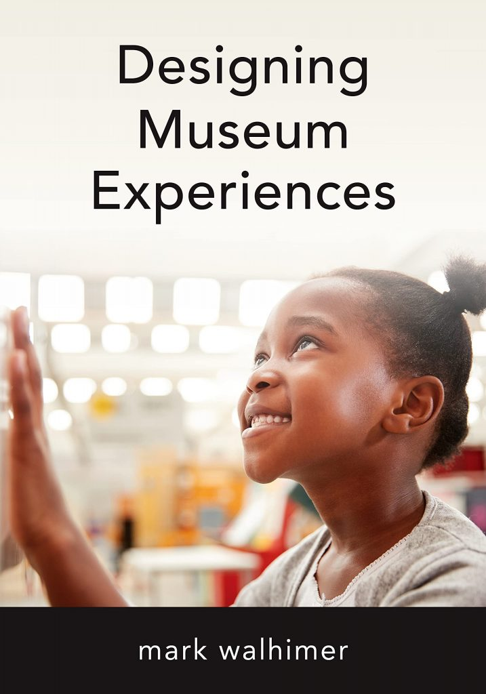

A how-to guide for creating visitor-centered, inclusive museum experiences — from the first touchpoint through the post-visit relationship.

What happens before the visitor arrives determines whether they arrive at all. Website, social media, word-of-mouth, and community presence create the expectation the institution must then fulfill. Planning the pre-visit means planning the relationship before it begins.
Every spatial decision — threshold, sequence, scale, light, signage, and staff interaction — is a choice about what the visitor feels and retains. Visitor-centered design puts the emotional and intellectual needs of the visitor at the center of every one of those decisions.
A single visit is the beginning, not the end. The institutions that survive are the ones that create a reason to return — through programming, digital presence, community connection, and the kind of experience that generates genuine recommendation.
Museums are changing from static, monolithic, and encyclopedic institutions to institutions that are visitor-centric, with shared authority that allows museum and visitors to become co-creators in content creation.
Designing Museum Experiences · Mark Walhimer · Rowman & Littlefield, 2021Drawn from user-centered design methodology and adapted for museum practice — each tool builds toward a deeper understanding of what visitors actually need from your institution.
Managing partner of Museum Planning LLC. Since 1992, part of opening more than forty museums across the United States and internationally — science centers, children's museums, natural history museums, history museums, cultural centers.
Author of Museums 101 (2015) and Designing Museum Experiences (2021), both published by Rowman & Littlefield / AAM Press. A third book is in development.
Part-time industrial design professor. Bachelor's degree in studio art, Skidmore College. Master's degree in industrial design and exhibition design, Pratt Institute.
Full Biography →Feasibility studies, strategic planning, master planning, and exhibition design. Forty museums. Mark personally involved in every engagement.
museumplanning.com →The foundational guide to starting a museum — governance, planning, and public trust.
museums101.com →From first community assessment to opening day — forty museums, one methodology, Mark personally involved in every engagement.
Start a Conversation →